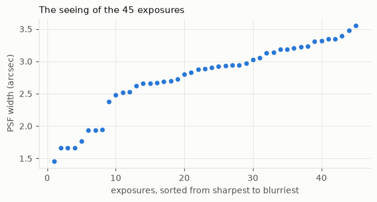
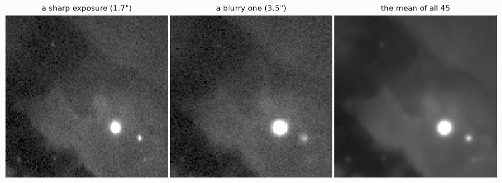
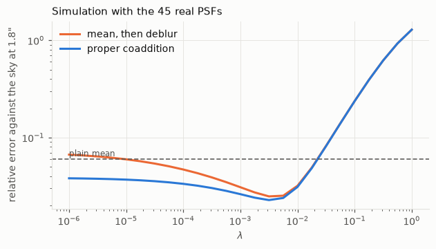
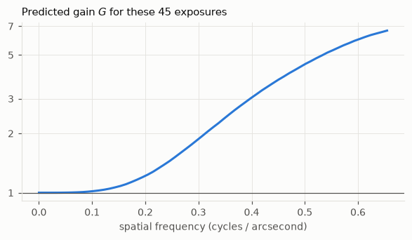
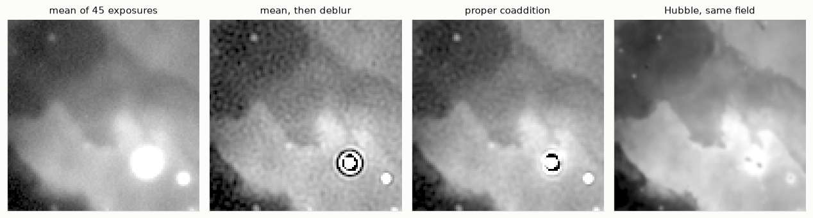
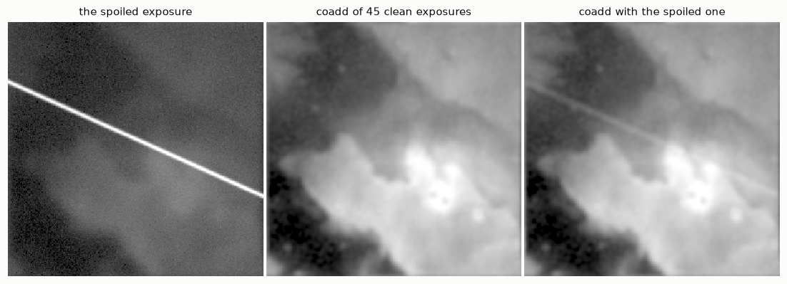

import numpy as np
from numpy.fft import fft2, ifft2, fftfreq
import matplotlib.pyplot as plt
import hnotools as hno
hno.style()
data = hno.load_sample()
scale = float(data['pixel_scale']) # arcseconds per pixel8 From one frame to many: proper coaddition
This notebook has no chapter in Hansen, Nagy & O’Leary. It applies everything the book taught to the situation of every astronomer: not one blurred image, but many, each with its own blur. It is the starting point of our research project. Reference: B. Zackay & E. Ofek, “How to COADD images. II”, The Astrophysical Journal 836, 188 (2017).
What you will take away
- With \(N\) exposures of the same sky, the least-squares problem still has a closed-form solution, and it costs one FFT per exposure.
- That solution stacks and deblurs in one step. It is not the same as averaging first and deblurring afterwards, and it is never worse.
- The gain comes from the exposures being different: each one is trusted at the spatial frequencies where it is good. No exposure is thrown away.
- How much is gained can be computed in advance from the PSFs alone.
- The estimator trusts every exposure blindly. One defective exposure contaminates the result: this is where the project begins.
8.1 Forty-five exposures, forty-five PSFs
data['cube'] holds 45 exposures of five minutes each, taken on several nights. data['all_psf'] holds, for each one, the PSF measured on its stars (notebook 3), the small registration error left after aligning the exposures, and the noise level.
cube = data['cube'].astype(float) # 45 x 128 x 128
P = data['all_psf'].astype(float) # columns: fmaj, fmin, pa, beta, dx, dy, sigma, f
fwhm = np.sqrt(P[:, 0] * P[:, 1]) * scale # arcseconds
noise = P[:, 6] / P[:, 7] # noise level of each exposure (estimated on whole frames,
# nebula included: only the ratios between exposures matter)
N = len(cube)
order = np.argsort(fwhm)
fig, ax = plt.subplots(figsize=(6.4, 2.9))
ax.plot(np.arange(1, N + 1), fwhm[order], 'o', color=hno.BLUE, ms=4)
ax.set_xlabel('exposures, sorted from sharpest to blurriest'); ax.set_ylabel('PSF width (arcsec)')
ax.set_title('The seeing of the 45 exposures', loc='left');
print(f'PSF width from {fwhm.min():.2f} to {fwhm.max():.2f} arcsec, median {np.median(fwhm):.2f}')
print(f'noise from {noise.min():.1e} to {noise.max():.1e}')PSF width from 1.46 to 3.56 arcsec, median 2.89
noise from 4.1e-04 to 4.4e-04
sharp, blurry = order[1], order[-2]
hno.show([cube[sharp], cube[blurry], cube.mean(axis=0)],
[f'a sharp exposure ({fwhm[sharp]:.1f}")', f'a blurry one ({fwhm[blurry]:.1f}")', 'the mean of all 45'], same_scale=True);
The width of the PSF varies by more than a factor of two. The mean of all exposures (right) has little noise, but it is blurrier than the best exposures: averaging has diluted the sharp exposures in the blurry ones.
Astronomers know two classical answers, and both waste something.
- Average everything, then deblur. Simple, but the fine detail that only the sharp exposures recorded has been diluted before the deblurring starts.
- Keep only the sharpest exposures (“lucky imaging”). The result is sharper, but most of the photons, collected at great cost, go in the bin.
8.2 The model and its solution
Write the model of notebook 1 once per exposure. All exposures see the same sky \(x\); exposure \(i\) has its own PSF \(k_i\) and its own noise level \(s_i\):
\[y_i = k_i * x + n_i, \qquad n_i \sim \mathcal N(0, s_i^2 I), \qquad i = 1, \dots, N .\]
Least squares, each exposure weighted by its noise (a noisy exposure counts less):
\[\hat x = \arg\min_x \;\sum_{i=1}^{N} \frac{1}{2 s_i^2}\,\|y_i - k_i * x\|^2 .\]
In Fourier space every convolution is a product, the sum of squares separates frequency by frequency, and each frequency is a one-unknown least-squares problem. Setting the derivative to zero gives
\[S(\nu)\,X(\nu) = R(\nu), \qquad R = \sum_i \frac{\bar K_i\, Y_i}{s_i^2}, \qquad S = \sum_i \frac{|K_i|^2}{s_i^2} .\]
\(S\) goes to zero at high frequencies, as \(|K|^2\) did for one image, so we regularise exactly as in notebook 6: a declared target PSF \(t\) and a small \(\lambda\),
\[\hat X_t = T\,\frac{R}{S + \lambda\,S(0)} .\]
This is proper coaddition. With \(N = 1\) it is the target filter of notebook 6.
One detail before coding it. The exposures are aligned to a fraction of a pixel, not perfectly. A shift by \((d_x, d_y)\) multiplies the Fourier transform by a phase, \(e^{-2\pi i(\nu_x d_x + \nu_y d_y)}\) (the shift theorem), so the residual shift of each exposure simply goes into its \(K_i\).
def frame_otf(shape, p, zoom=1.0):
"""Transfer function K_i of one exposure: its Moffat PSF, shifted by its
registration error. p = (fmaj, fmin, pa, beta, dx, dy, ...)."""
K = hno.psf2otf(hno.moffat_psf(shape, p[0] * zoom, p[1] * zoom, p[2], p[3]))
nu_y, nu_x = fftfreq(shape[0])[:, None], fftfreq(shape[1])[None, :]
return K * np.exp(-2j * np.pi * (nu_x * p[4] * zoom + nu_y * p[5] * zoom))
def proper_coadd(Y, K, s, T, lam):
"""Y, K: arrays (N, h, w) of Fourier transforms and transfer functions;
s: noise levels (N,); T: transfer function of the target; lam: regularisation."""
w = (1.0 / s**2)[:, None, None]
R = np.sum(w * np.conj(K) * Y, axis=0)
S = np.sum(w * np.abs(K)**2, axis=0)
return ifft2(T * R / (S + lam * S.flat[0])).real
def stack_then_deblur(Y, K_mean, T, lam):
"""The classical pipeline: average the exposures, then one target filter."""
return ifft2(T * np.conj(K_mean) * Y.mean(axis=0) / (np.abs(K_mean)**2 + lam)).realTwo functions of three lines each. Everything else in this notebook is measurement.
8.3 A controlled experiment
First with a known truth. We take the Hubble image as the sky and simulate 45 exposures of it with the 45 real PSFs and the real relative noise levels of our data. (The Hubble image has pixels half the size of ours, so the PSF widths are doubled to keep the same sky scale.)
The three contenders, all aiming at the same target of 1.8 arcsec:
- the plain mean, not deblurred;
- the mean, then deblurred, using the exact PSF of the mean (a generous assumption: in real life it has to be fitted);
- proper coaddition.
x = data['hubble'].astype(float)
rng = np.random.default_rng(3)
K_sim = np.array([frame_otf(x.shape, p, zoom=2.0) for p in P])
s_sim = 0.05 * noise / np.median(noise) # 5 % noise in a typical exposure
Y_sim = np.array([K * fft2(x) + fft2(si * rng.standard_normal(x.shape)) for K, si in zip(K_sim, s_sim)])
T_sim = hno.psf2otf(hno.gaussian_psf(x.shape, 2 * 2.36)).real # target: 1.8 arcsec
truth = ifft2(T_sim * fft2(x)).real # the sky seen through the target
core = (slice(24, -24), slice(24, -24))
error = lambda img: hno.rel_error(img[core] - truth[core].mean(), truth[core] - truth[core].mean())
lams = np.logspace(-6, 0, 25)
K_mean = K_sim.mean(axis=0)
err_classic = [error(stack_then_deblur(Y_sim, K_mean, T_sim, l)) for l in lams]
err_proper = [error(proper_coadd(Y_sim, K_sim, s_sim, T_sim, l)) for l in lams]
mean_img = ifft2(Y_sim.mean(axis=0)).real
fig, ax = plt.subplots(figsize=(6.4, 3.2))
ax.loglog(lams, err_classic, color=hno.ORANGE, label='mean, then deblur')
ax.loglog(lams, err_proper, color=hno.BLUE, label='proper coaddition')
ax.axhline(error(mean_img), color=hno.INK2, lw=1.0, ls=(0, (4, 2)))
ax.text(lams[0], error(mean_img) * 1.07, 'plain mean', fontsize=8, color=hno.INK2)
ax.set_xlabel('$\\lambda$'); ax.set_ylabel('relative error against the sky at 1.8"'); ax.legend(loc='upper left')
ax.set_title('Simulation with the 45 real PSFs', loc='left');
print(f'plain mean {error(mean_img):.4f}')
print(f'mean, then deblur {min(err_classic):.4f} (best lambda {lams[np.argmin(err_classic)]:.0e})')
print(f'proper coaddition {min(err_proper):.4f} (best lambda {lams[np.argmin(err_proper)]:.0e})')
print(f'proper coaddition lowers the error by {1 - min(err_proper) / min(err_classic):.0%}')plain mean 0.0600
mean, then deblur 0.0248 (best lambda 3e-03)
proper coaddition 0.0228 (best lambda 3e-03)
proper coaddition lowers the error by 8%
Both deblurring pipelines beat the plain mean by a wide margin. Proper coaddition is never above the classical pipeline, clearly below it for small \(\lambda\), and at the best setting of each it has the lower error. The gain is modest here, and it was obtained against an opponent that was given the exact PSF of the mean. What matters is where it comes from.
8.4 Where the gain comes from
Look at one spatial frequency \(\nu\). In the sum \(R\), exposure \(i\) enters with the weight \(\bar K_i / s_i^2\): it counts in proportion to how well it transmits that frequency. A blurry exposure has \(K_i(\nu) \approx 0\) at a high frequency and simply does not vote there; at low frequencies, where it is as good as any other, it votes fully.
Here is the share of each exposure in \(S\), at a low and at a high frequency:
Figure 8.4 tells the story. For the large structures every exposure contributes about equally: nothing is wasted. For the fine detail, a handful of sharp exposures carry almost everything and the blurry ones are ignored. Proper coaddition is lucky imaging decided frequency by frequency, without throwing a single photon away.
The size of the gain can be written down. At each frequency, the ratio of the squared signal-to-noise ratios of proper coaddition and of the plain mean is
\[G(\nu) = \frac{S(\nu)\,\sum_i s_i^2}{\bigl|\sum_i K_i(\nu)\bigr|^2} \;\ge\; 1 ,\]
by the Cauchy-Schwarz inequality, with equality only if all exposures have the same PSF and the same noise. Deblurring the mean afterwards cannot change its signal-to-noise ratio at any frequency (it multiplies signal and noise by the same number), so \(G\) is also the advantage over the classical pipeline. And \(G\) needs only the PSFs and the noise levels: it can be computed before any coaddition is done.
S_real = weights.sum(axis=0)
G = S_real * np.sum(noise**2) / np.abs(K_all.sum(axis=0))**2
nu, G_r = hno.radial_profile(G)
fig, ax = plt.subplots(figsize=(6.4, 3.0))
ax.semilogy(nu / scale, G_r, color=hno.BLUE)
ax.axhline(1, color=hno.INK2, lw=0.8)
ax.set_yticks([1, 2, 3, 5, 7]); ax.set_yticklabels(['1', '2', '3', '5', '7']); ax.minorticks_off()
ax.set_xlabel('spatial frequency (cycles / arcsecond)'); ax.set_title('Predicted gain $G$ for these 45 exposures', loc='left');
print(f'G at 0.3 cycles/arcsec: {G_r[np.argmin(np.abs(nu / scale - 0.3))]:.2f}')G at 0.3 cycles/arcsec: 1.84
Figure 8.5 predicts no gain for the large structures, a factor of almost two at 0.3 cycles per arcsecond, more beyond. For the two other colour channels of this nebula, whose exposures were taken in steadier conditions, the same computation gives 1.15: hardly any gain to expect. Whether this prediction matches the gain actually measured, across many fields and instruments, is the question of our research project.
8.5 The real exposures
Now the real cube. There is no true image, so we judge as in notebook 6: the width of a star in the result, and the noise, measured by processing the even and the odd exposures separately and taking half the difference (notebook 2).
For the classical pipeline we do what one does in practice: measure the PSF of the mean on a star, and deblur the mean with it.
Y_all = np.array([fft2(hno.taper(f, 12)) for f in cube])
T = hno.psf2otf(hno.gaussian_psf(shape, 2.36)).real # target: 2.36 px = 1.8 arcsec
star = (97, 105) # an unsaturated star
fit_mean = hno.fit_star(cube.mean(axis=0), *star)
K_of_mean = hno.psf2otf(hno.moffat_psf(shape, fit_mean['fwhm'], beta=fit_mean['beta']))
even, odd = np.arange(0, N, 2), np.arange(1, N, 2)
quiet = (slice(4, 44), slice(4, 44)) # a corner without bright stars
robust_sigma = lambda a: 1.4826 * np.median(np.abs(a - np.median(a)))
def measure(pipeline, lam):
"""Star width (arcsec) of the full result, and its noise from the even/odd split."""
full = pipeline(np.arange(N), lam)
half_diff = (pipeline(even, lam) - pipeline(odd, lam)) / 2
return hno.fit_star(full, *star)['fwhm'] * scale, robust_sigma(half_diff[quiet]), full
run_proper = lambda idx, lam: proper_coadd(Y_all[idx], K_all[idx], noise[idx], T, lam)
run_classic = lambda idx, lam: stack_then_deblur(Y_all[idx], K_of_mean, T, lam)
print(f'plain mean: star width {fit_mean["fwhm"] * scale:.2f} arcsec')
print(f'{"lambda":>8s} | proper: width noise | classic: width noise')
results = {}
for lam in (1e-1, 3e-2, 1e-2, 3e-3, 1e-3, 3e-4):
wp, n_p, img_p = measure(run_proper, lam); wc, n_c, img_c = measure(run_classic, lam)
results[lam] = (wp, n_p, img_p, wc, n_c, img_c)
print(f'{lam:8.0e} | {wp:5.2f} {n_p:.2e} | {wc:5.2f} {n_c:.2e}')plain mean: star width 2.46 arcsec
lambda | proper: width noise | classic: width noise
1e-01 | 2.95 1.01e-05 | 3.16 9.68e-06
3e-02 | 2.50 1.65e-05 | 2.70 1.68e-05
1e-02 | 2.22 2.39e-05 | 2.40 2.49e-05
3e-03 | 2.02 3.18e-05 | 2.17 3.64e-05
1e-03 | 1.90 3.88e-05 | 2.03 4.96e-05
3e-04 | 1.84 4.45e-05 | 1.92 6.51e-05Read the table along each row first: at every \(\lambda\) proper coaddition is sharper, and from \(\lambda = 3\times10^{-2}\) downwards, which is where either method starts to sharpen the image at all, it is also less noisy.
Then compare at equal sharpness, which is the fair comparison. Proper coaddition at \(\lambda = 3\times10^{-3}\) and the classical pipeline at \(\lambda = 10^{-3}\) deliver the same star width:
wp, n_p, img_p = results[3e-3][:3]
wc, n_c, img_c = results[1e-3][3:]
print(f'proper coaddition : star width {wp:.2f} arcsec, noise {n_p:.2e}')
print(f'mean, then deblur : star width {wc:.2f} arcsec, noise {n_c:.2e}')
print(f'same sharpness, {1 - n_p / n_c:.0%} less noise')
inside = (slice(14, -14), slice(14, -14)) # leave out the tapered frame
lo, hi = np.percentile(img_p[inside], [1, 99.0])
fig, ax = plt.subplots(1, 4, figsize=(11.6, 3.2))
panels = ((cube.mean(axis=0)[inside], 'mean of 45 exposures'), (img_c[inside], 'mean, then deblur'),
(img_p[inside], 'proper coaddition'), (data['hubble'].astype(float)[28:-28, 28:-28], 'Hubble, same field'))
for a, (img, name) in zip(ax, panels):
l, h = (lo, hi) if 'Hubble' not in name else np.percentile(img, [1, 99.7])
a.imshow(np.clip((img - l) / (h - l), 0, 1) ** 0.5, vmin=0, vmax=1); a.set_title(name)
a.set_xticks([]); a.set_yticks([]); a.grid(False)
fig.tight_layout()proper coaddition : star width 2.02 arcsec, noise 3.18e-05
mean, then deblur : star width 2.03 arcsec, noise 4.96e-05
same sharpness, 36% less noise
A third less noise at the same delivered resolution, from the same 45 exposures, with a method that fits in three lines and uses no prior knowledge about nebulae: only the measured PSFs. The Hubble image of the same field, on the right, shows what there is to be found.
Look also at the bright star: in both deblurred images it has a dark ring. It is saturated, it violates the model, and no amount of clever weighting changes that. The project measures the PSFs on the stars, then removes the stars from the exposures before coadding the nebula.
8.6 The weak point: every exposure is trusted
Least squares has no notion of a wrong measurement. Go back to the simulation and spoil one exposure out of 45 with a satellite trail, a bright line that the model knows nothing about.
bad = 10
yy, xx = np.indices(x.shape)
trail = 3.0 * np.exp(-0.5 * ((yy - 0.45 * xx - 60) / 1.5)**2) # a bright oblique line
Y_bad = Y_sim.copy()
Y_bad[bad] = Y_sim[bad] + fft2(trail)
lam = lams[np.argmin(err_proper)]
clean = proper_coadd(Y_sim, K_sim, s_sim, T_sim, lam)
spoiled = proper_coadd(Y_bad, K_sim, s_sim, T_sim, lam)
print(f'error without the trail: {error(clean):.4f} with one spoiled exposure: {error(spoiled):.4f}')
hno.show([ifft2(Y_bad[bad]).real, clean, spoiled], ['the spoiled exposure', 'coadd of 45 clean exposures', 'coadd with the spoiled one'], width=3.3);error without the trail: 0.0228 with one spoiled exposure: 0.0425
One exposure in forty-five, and the trail is in the final image, and the error has almost doubled. The classical average at least has a standard defence, outlier rejection: discard, pixel by pixel, the values that disagree with the other exposures. Proper coaddition as written has none.
This is not a thought experiment. In our real data one exposure was taken during a gust of wind and shows every star twice. Its PSF fit looked perfectly normal, it was coadded with the others, and a ghost star appeared in the result.
Making the estimator robust, so that an exposure or a pixel that contradicts the others is detected and set aside, without giving up what proper coaddition gains, is the first task of the project. It requires replacing the square in the least-squares criterion by something more tolerant, and then there is no closed form any more. Notebook 9 provides the tools.
Your turn
- Derive it. Starting from the weighted least-squares criterion of section 8.2, write the criterion in Fourier space (Parseval), differentiate with respect to \(X(\nu)\) and obtain \(S X = R\).
- One exposure. Check numerically that
proper_coaddwith a single exposure equals the target filter of notebook 6. - Identical exposures. Replace all 45 PSFs by the same one in the simulation of section 8.3. What happens to the two error curves, and to \(G\)? Explain with the Cauchy-Schwarz inequality.
- Lucky imaging. Coadd only the 10 sharpest exposures of the real cube, properly. Compare star width and noise with the full coadd at the same \(\lambda\). Who wins on each axis, and why does the full coadd never lose on sharpness at equal noise?
- The shift theorem. Set the registration errors (columns 4 and 5 of
P) to zero inframe_otfand redo section 8.5. How much star width does ignoring them cost? - A wrong PSF. Multiply the PSF widths of all exposures by 1.2 before coadding the real cube (you “measured” them badly). What happens to the delivered star width? What does the dark ring around ordinary stars tell you? This is why the project audits its results.
- Before the project. Read sections 1 to 3 of Zackay & Ofek (2017) and find our \(R\) and \(S\) in their equations. What do they call the image \(R / \sqrt{S}\), and what is special about its noise?